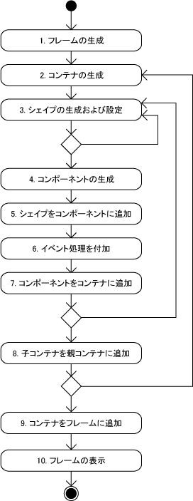

|  |
左図は LG3Dアプリケーション作成の基本的な流れになります。 1-2がアプリケーションの土台作り、3-8が表示するコンテンツの作成、9-10が後処理になります。
|
この章では LG3Dアプリケーション作成の手始めとしてボックスを作成します。
LG3Dにあらかじめ用意してあるシェイプである org.jdesktop.lg3d.utils.shape.Box クラスを
利用します。
このボックスを作成する時、形状を示すために x, y ,z 座標 (すべてfloat) と
アピアランスと呼ばれるものが必要になります。
作成されるボックスは (0,0,0)を中心とし、各辺の長さが 2x, 2y, 2z となります。
また、アピアランスは作成する3Dアプリケーション(ここではボックス)の
表面の色や光の反射率を表すものです。
ここでは簡単なアピアランスを作成することができる
org.jdesktop.lg3d.utils.shape.SimpleAppearance クラスを用いて、
不透明な薄い青色を示すアピアランスを作成しています。
ボックスのシェイプはコンポーネントに追加し、コンポーネントをフレームに追加しています。
( 今回はコンテナは作成せず、フレームに直接コンポーネントを追加しています。 )
/*
* TextureBox.java
*
* Created on 2005/09/29, 15:42
*
* To change this template, choose Tools | Options and locate the template under
* the Source Creation and Management node. Right-click the template and choose
* Open. You can then make changes to the template in the Source Editor.
*/
package texturebox;
/**
*
* @author duke
*/
import javax.vecmath.Vector3f;
import org.jdesktop.lg3d.sg.Appearance;
import org.jdesktop.lg3d.utils.shape.Box;
import org.jdesktop.lg3d.utils.shape.SimpleAppearance;
import org.jdesktop.lg3d.wg.Component3D;
import org.jdesktop.lg3d.wg.Frame3D;
public class TextureBox {
/** Creates a new instance of TextureBox */
public TextureBox() {
// フレームの生成
Frame3D frame = new Frame3D();
// シェイプの生成および設定
// 色を指定した Appearance の設定
// 引数は R,G,B,アルファ(透過度) で、0-1までのfloat値
Appearance appearance
= new SimpleAppearance(0.6f, 0.6f, 1.0f, 1.0f);
// Box の生成
// 引数は、 x、y、z 座標、アピアランス
// 座標の単位はメートル(float値)
// 作成されるのは 横 0.20f, 縦 0.16f, 奥行き 0.12f のボックス
Box box = new Box(0.10f, 0.08f, 0.06f, appearance);
// コンポーネントの生成
Component3D component = new Component3D();
// シェイプをコンポーネントに追加
component.addChild(box);
// コンポーネントをコンテナに追加
// ここではコンテナを使用していないので、
// 直接フレームに追加
frame.addChild(component);
// フレームの表示
// フレームの大きさを設定
// 引数は、Java3Dのクラス
// javax.vecmath.Vector3f(float x,float y,float z)
// x = 幅、y = 高さ, z = 奥行き (単位はメートル)
frame.setPreferredSize(new Vector3f(0.1f, 0.08f, 0.06f));
// フレームの表示
frame.changeEnabled(true);
frame.changeVisible(true);
}
/**
* @param args the command line arguments
*/
public static void main(String[] args) {
// TODO code application logic here
new TextureBox();
}
}
|